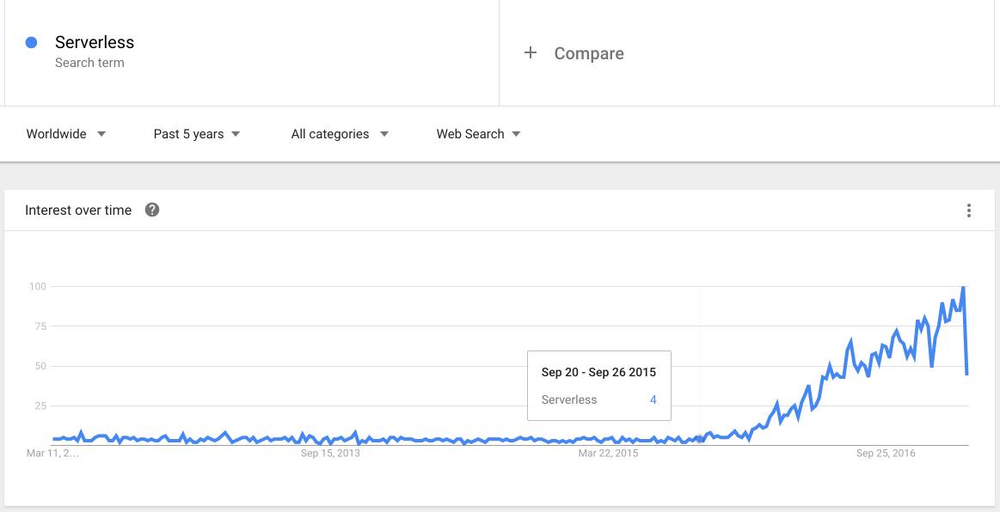
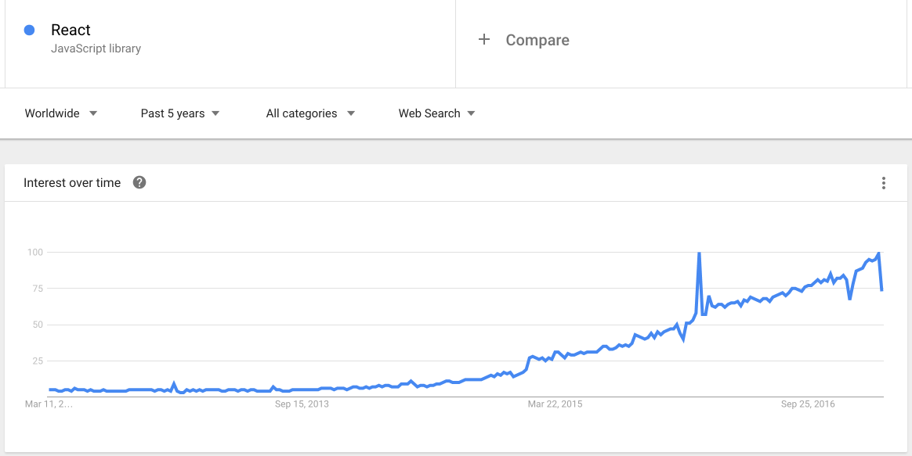
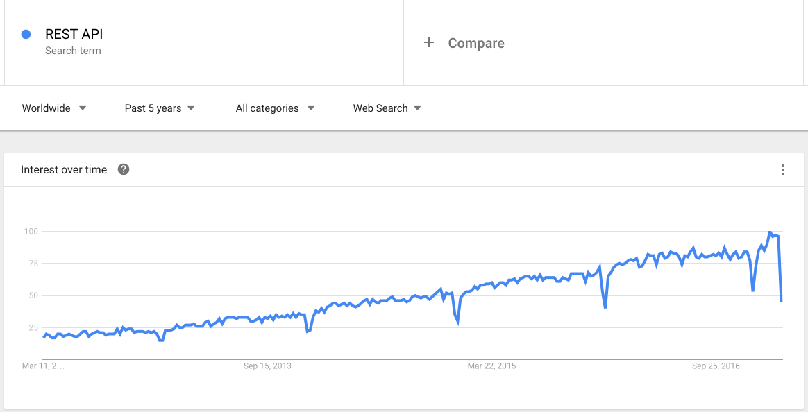
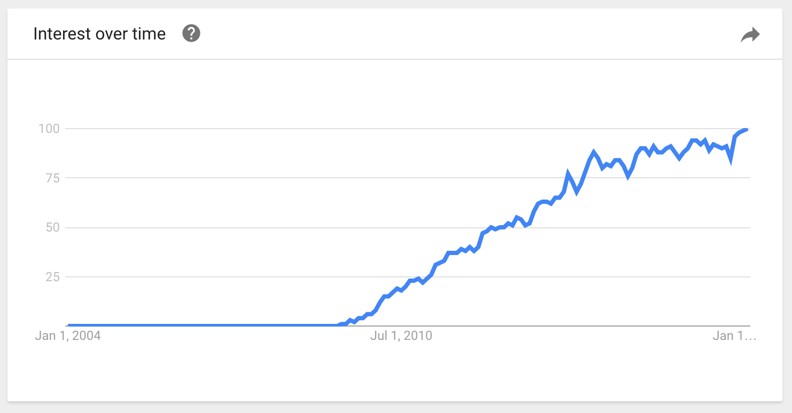
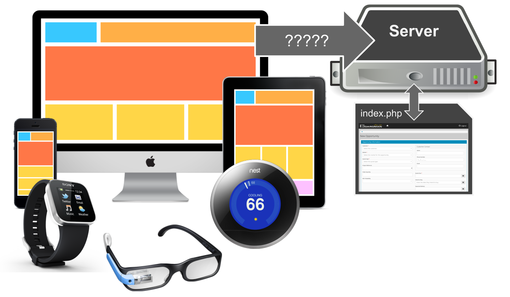
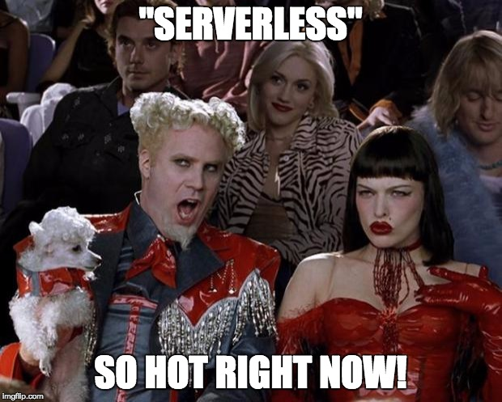
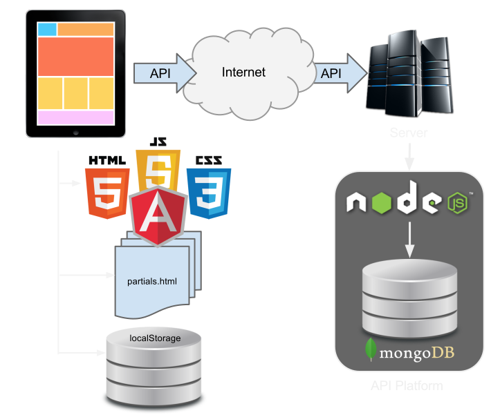
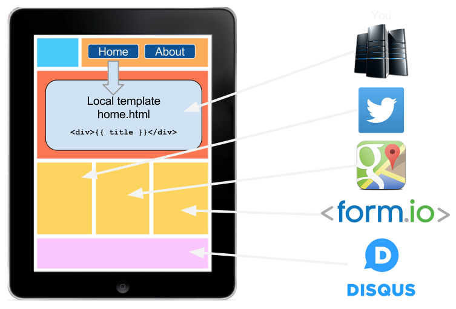

The rise of Serverless Applications
A MongoDB Case Story
Form.io ♥ MongoDB
- Build a form (drag-and-drop)
- ... which generates a JSON schema
- ... which generates a REST API
- ... which defines a data model in MongoDB..
Build MongoDB models using a Form Builder




MongoDB

... and we gave version numbers
Web 1.0
The static web
Web 2.0
The dynamic web
Web 2.0
The rise of the CMS
Life was good
Then this happened

"Mobile First"

Mobile First
The server still provides the interface.
Life was good
Then this happened
The "Serverless" Movement
A "Serverless" application
Why the name "Serverless"?
Doesn't the app still use a server?“Serverless does not mean your application does not need a server.
It means your application has been LIBERATED from the server.”
“My app is MOBILE FIRST.
Am I SERVERLESS?”
No.
"Mobile first" is no longer good enough
Mobile First
The server still provides the interface.
"API first"
- Take care of your REST platform first.
- REST platform must be "stateless"
- Your first "app" should be the API test.
- Build your "Serverless" app on those API's.
Why "Serverless"?
Forces us to develop websites like web applications.
Benefits of "Serverless"
Separation of Concerns

Scalability

Deployability

Offline Mode

How "Serverless" works
Serverless App Requests

How is this better?

Web 2.0 Request

Serverless Request

"Stateless" REST API
Use tokens (JWT) to maintain state in client.

"Serverless" App Frameworks

Single Page Application

Single Page Application

Micro-Services
Helping us go from this...

To this...
Micro-service architecture